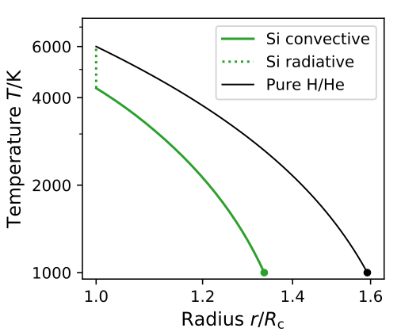
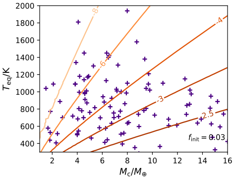
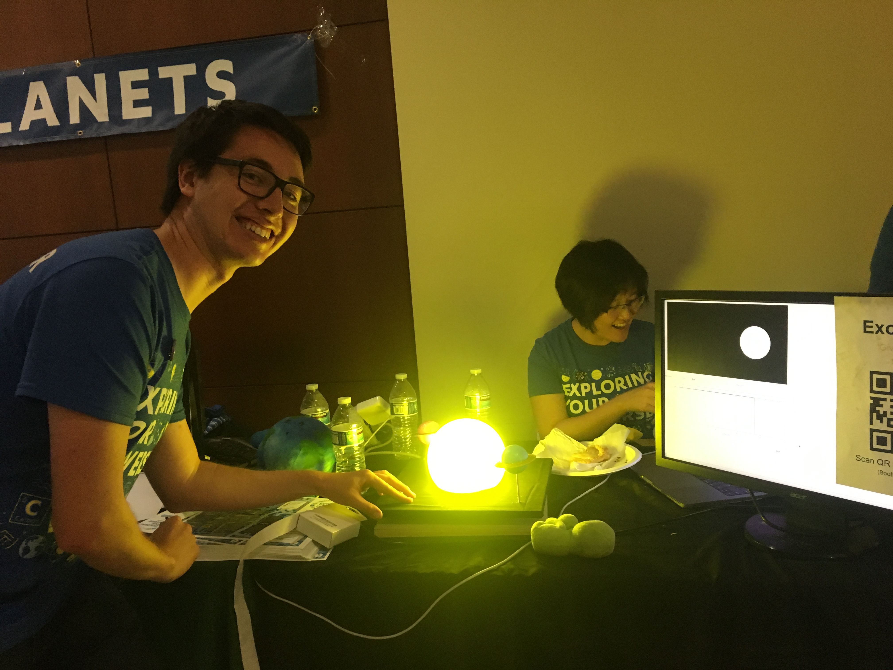

In Misener & Schlichting (2022), I show that silicate vapor, expected to be abundant at the base of young, H-rich sub-Neptune atmospheres, can inhibit convection. The induced near-surface radiative layer can have a steep temperature gradient, decreasing the width of the atmosphere. In Misener & Schlichting (2023), I followed this up with a chemistry model, showing that silane, SiH4, can be an important component of sub-Neptune atmospheres.

In Misener & Schlichting (2021), I show that at the end of core-powered mass loss, super-Earth cores are able to cool faster than their atmospheres lose mass, allowing the atmospheres to contract and preserve any remaining primordial gas. I derive analytic scalings, complemented by numerical results, which show the diverse final atmospheric states super-Earths can have.

I'm a San Franciscan who journeyed to the cold winters of the University of Chicago for undergrad, then came back to the sunny West Coast for my advanced studies. I want to reveal the physical mechanisms behind the formation of the planets, both our Solar System and beyond in the ever-increasing realm of exoplanetary systems.